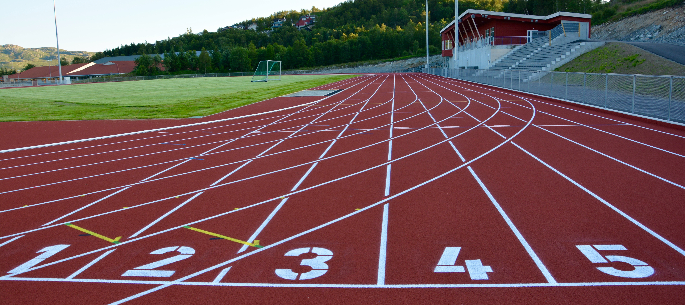

Hvem er Gjesdal IL?
Gjesdal Idrettslag (GIL) er en idrettsklubb som befinner seg på Ålgård.
Klubben ble stiftet i 1931, og er aktiv innen friidrett, ski og
volleyball. GIL har et bredt tilbud innen idrett for barn og unge.
I tillegg har de også et stort og nytt klubbhus med egen gymsal og
styrkerom til disposisjon for medlemmer. Klubbhuset kan også leies ut
til private arrangementer. Gjesdal IL arrangerer også flere arrangementer selv som
friidrettsstevner, skirenn og volleyballturneringer.
Besøk nettsiden på Nettside
